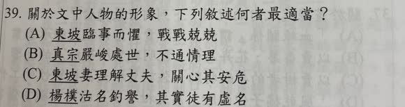

分享原卷｜第39題
完整原題
作答所需文章／材料
昔年過洛，見李公簡云：「真宗既東封還，訪天下隱者，得杞人楊樸，能詩。及召對，自言不能。上問：『臨行有人作詩送卿否？』樸言：『惟臣妻有一首云：更休落魄耽杯酒，且莫猖狂愛詠詩。今日捉將官裡去，這回斷送老頭皮。』上大笑，放還山。」余在湖州，坐作詩追赴詔獄，妻子送余出門，皆哭。無以語之，顧語妻曰：「子獨不能如楊處士妻作一詩送我乎？」妻子不覺失笑，余乃出。 ——蘇軾《東坡志林》卷二〈隱逸・書楊樸事〉 【原題註釋】 1. 東封還：封泰山歸來。 2. 杞：地名。 3. 召對：召其應對詩歌。先想一想，再查看答案、解說與原圖
逐項解析
| 選項與原句 | 判讀 | 句意與判斷理由 |
|---|---|---|
| (A) 東坡臨事而懼，戰戰兢兢 | 不選 | 蘇軾以幽默舊事安慰家人，與戰戰兢兢的描寫不符。 |
| (B) 真宗嚴峻處世，不通情理 | 不選 | 真宗上大笑、放還山，顯示並未嚴厲刁難楊樸。 |
| (C) 東坡妻理解丈夫，關心其安危 | 應選 | 先哭是擔心丈夫，聽到玩笑又失笑，顯示理解丈夫的幽默。 |
| (D) 楊樸沽名釣譽，其實徒有虛名 | 不選 | 開頭明說能詩，受召時自言不能不足以證明他徒有虛名或追求名聲。 |
詳細說明與解題步驟
【全段白話】
從前經過洛陽時，我見到李公簡，他說：「宋真宗到泰山封禪回來，尋訪天下隱士，找到杞地一位擅長作詩的楊樸。等到皇帝召見問話時，楊樸卻說自己不會作詩。皇帝問：『臨行前有人作詩送你嗎？』楊樸說：『只有我的妻子作了一首：別再失意沉醉於酒，也別再狂放地喜愛吟詩。今天被捉到官府，這回恐怕要丟掉老命了。』皇帝聽了大笑，放他回山裡。」
我在湖州時，因作詩而被追捕、送往詔獄。妻子兒女送我出門，都哭了。我不知道用什麼話安慰他們，就回頭對妻子說：「你難道不能像楊處士的妻子，作一首詩來送我嗎？」妻子不由得笑了，我這才出門。
「坐」指因……獲罪；「妻子」在此包含妻子與兒女；「失笑」是不由自主地笑出來，不是笑話別人失敗。
【人物判讀】
妻子因蘇軾將赴詔獄而哭，表現對丈夫安危的關心；蘇軾以楊樸妻子的詩來開玩笑，她又不覺失笑，呈現能理解丈夫幽默的默契。因此選C。
蘇軾在危難中用舊事寬慰家人，並非臨事慌亂；宋真宗聽詩大笑並讓楊樸歸山，不能說嚴峻不通情理。楊樸受召時自言不能作詩，也不能據此判定他沽名釣譽、徒有虛名。
① 送行時皆哭，表現關心安危
蘇軾因作詩被追赴詔獄，妻兒送他出門時皆哭。這個反應直接表現家人的擔心，也支持妻子關心丈夫安危的判讀。
② 借楊樸舊事，用幽默寬慰
他借前段楊樸妻作詩送行的舊事，轉頭向妻子開玩笑。這是危難中寬慰家人的幽默，不是A說的臨事慌亂、戰戰兢兢。
③ 不覺失笑，顯出聽懂的默契
妻兒聽到玩笑而「不覺失笑」，是不由自主地笑，不是嘲笑。把前面的哭與後面的笑合看，C同時涵蓋關心與理解。
④ 從哭到不覺失笑，看出關心與理解
答案 C：東坡妻理解丈夫，關心其安危
- C：哭與笑的轉折，兼有擔心與默契。
- A：東坡能借舊事寬慰家人。
- B：真宗大笑、放還山，不是嚴峻不通情理。
- D：自言不能作詩，不足說楊樸徒有虛名。
核對註記：已依原卷或完整文字核對並獨立解題；對應教材課次未確認，歸綜合。
原圖（僅本題）

